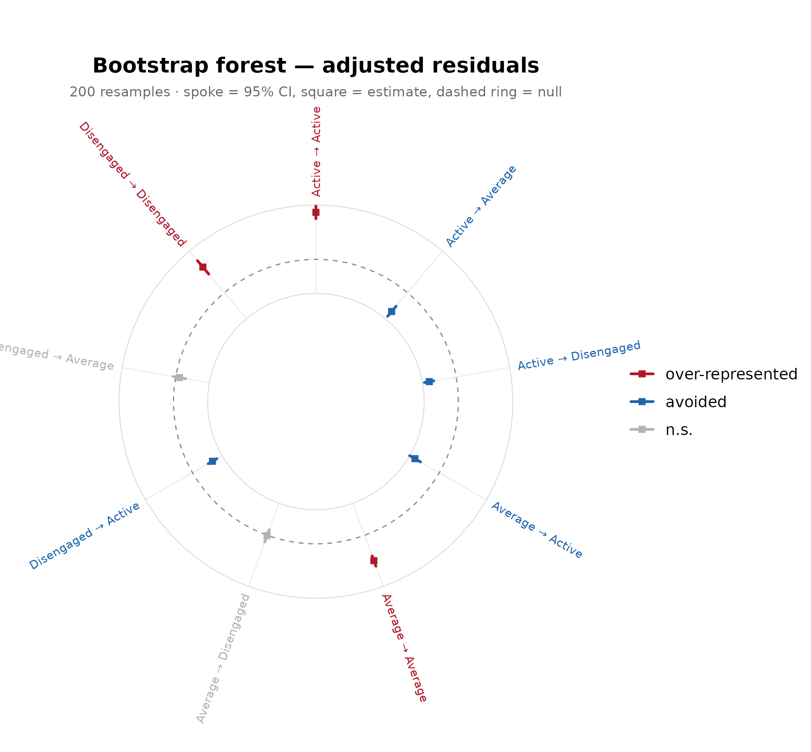
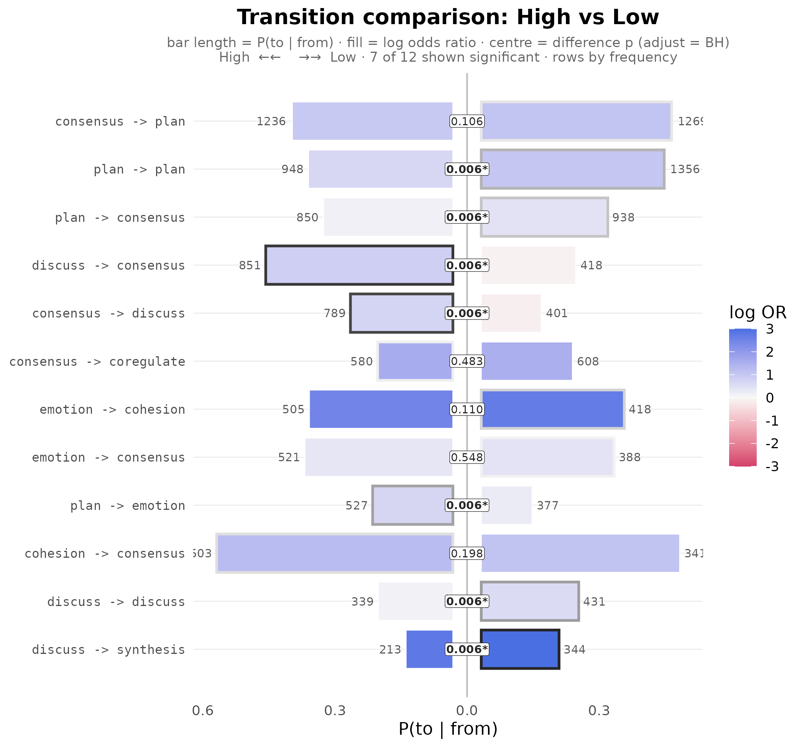

Confirmatory testing: matching claims to evidence
Source:vignettes/confirmatory.Rmd
confirmatory.RmdA fitted model is an estimate, not a finding. The Dynalytics
framework (Saqr, Lopez-Pernas, and Misiejuk, 2026) formalises this as a
scientific contract: every analytical claim must be matched by
evidence appropriate to its structure, scope, and complexity.
lagdynamics provides the confirmatory testing battery that
discharges that contract for lag-sequential models, where each edge is a
tested departure from independence.
The battery pairs a kind of claim with a kind of evidence:
| Claim | Evidence | Function |
|---|---|---|
| a specific transition is real / how precise it is | edge-level uncertainty |
certainty_lsa(), bootstrap_lsa()
|
| a significant transition is not fragile | robustness to information loss | stability_lsa() |
| the whole network is reproducible | structural reliability | reliability_lsa() |
| the structure is more than chance | an assumption-free null | permute_lsa() |
| two groups differ | inference under exchangeability |
compare_lsa(), bayes_compare_lsa()
|
We use the bundled engagement data (138 students, weekly
engagement states) for the single-network tests, and a long event log
with a real group for the comparison.
fit <- lsa(engagement)
transitions(fit, significant = TRUE)
#> from to lag count expected prob prob_col adj_res p
#> 1 Active Active 1 459 247 0.698 0.7051 21.7 4.60e-104
#> 2 Average Active 1 153 282 0.204 0.2350 -12.9 4.16e-38
#> 3 Disengaged Active 1 39 122 0.120 0.0599 -10.5 5.11e-26
#> 4 Active Average 1 176 290 0.267 0.2307 -11.3 1.06e-29
#> 5 Average Average 1 458 330 0.610 0.6003 12.5 1.35e-35
#> 6 Active Disengaged 1 23 121 0.035 0.0719 -12.6 3.64e-36
#> 7 Disengaged Disengaged 1 157 60 0.483 0.4906 15.4 1.90e-53
#> yules_q kappa kappa_z kappa_p lift sign significant
#> 1 0.828 0.444 19.19 4.68e-82 1.858 over TRUE
#> 2 -0.601 -0.499 -14.70 6.81e-49 0.543 under TRUE
#> 3 -0.698 -0.707 -11.46 2.03e-30 0.320 under TRUE
#> 4 -0.534 -0.424 -12.48 9.39e-36 0.608 under TRUE
#> 5 0.553 0.227 9.83 7.97e-23 1.386 over TRUE
#> 6 -0.826 -0.827 -13.41 5.14e-41 0.189 under TRUE
#> 7 0.754 0.314 13.56 7.34e-42 2.618 over TRUEThe adjusted residual already tests each transition against the independence model, but that test rests on large-sample assumptions that sequential data can violate. The battery supplies evidence that does not rely on them.
A specific transition: edge-level uncertainty
A claim about one edge requires an estimate of how much that edge
could vary. bootstrap_lsa() resamples whole sequences and
re-fits; certainty_lsa() derives the same uncertainty
analytically from a Dirichlet-Multinomial posterior. The two agree when
the population is homogeneous; the bootstrap is preferred for a mixture,
because resampling sequences preserves within-sequence dependence that
the analytic model treats as independent.
as.data.frame(bootstrap_lsa(fit, R = 200)) |> head(4) # resampling CIs
#> from to observed count_mean count_se count_ci_low count_ci_high
#> 1 Active Active 459 466.9 53.63 369 566
#> 2 Average Active 153 152.7 15.24 127 183
#> 3 Disengaged Active 39 38.6 6.37 26 51
#> 4 Active Average 176 176.2 16.06 148 210
#> adj_res_observed adj_res_mean adj_res_se adj_res_ci_low adj_res_ci_high
#> 1 21.7 21.7 1.58 18.1 24.28
#> 2 -12.9 -13.1 1.49 -15.8 -9.98
#> 3 -10.5 -10.5 1.27 -12.8 -8.09
#> 4 -11.3 -11.4 1.54 -14.3 -8.16
#> adj_res_p_boot adj_res_stable prob_observed prob_mean prob_ci_low
#> 1 0 TRUE 0.698 0.700 0.6388
#> 2 0 TRUE 0.204 0.205 0.1674
#> 3 0 TRUE 0.120 0.122 0.0856
#> 4 0 TRUE 0.267 0.266 0.2184
#> prob_ci_high yules_q_observed yules_q_mean yules_q_ci_low yules_q_ci_high
#> 1 0.751 0.828 0.827 0.754 0.879
#> 2 0.249 -0.601 -0.605 -0.695 -0.487
#> 3 0.159 -0.698 -0.696 -0.800 -0.581
#> 4 0.323 -0.534 -0.537 -0.633 -0.406
as.data.frame(certainty_lsa(fit)) |> head(4) # analytic CIs
#> from to observed prob_observed prob_mean prob_se prob_ci_low
#> 1 Active Active 459 0.698 0.697 0.0179 0.6611
#> 2 Average Active 153 0.204 0.204 0.0147 0.1760
#> 3 Disengaged Active 39 0.120 0.121 0.0180 0.0879
#> 4 Active Average 176 0.267 0.268 0.0172 0.2345
#> prob_ci_high p_value stable adj_res_observed adj_res_stable
#> 1 0.731 5.56e-20 TRUE 21.7 TRUE
#> 2 0.233 6.06e-04 TRUE -12.9 TRUE
#> 3 0.158 9.45e-02 FALSE -10.5 FALSE
#> 4 0.302 1.21e-04 TRUE -11.3 TRUEThe bootstrap forest shows every edge’s interval at once; tightly pinned edges support stronger claims.
plot(bootstrap_lsa(fit, R = 200))
A significant transition: robustness to information loss
stability_lsa() repeatedly drops a fraction of the cases
and re-fits, recording how often each significant edge stays
significant. A high stability supports reading the edge as a property of
the process; a low one marks it as sample-dependent.
as.data.frame(stability_lsa(fit, R = 200)) |> head(4)
#> from to observed_sig stability stable
#> 1 Active Active TRUE 1 TRUE
#> 2 Average Active TRUE 1 TRUE
#> 3 Disengaged Active TRUE 1 TRUE
#> 4 Active Average TRUE 1 TRUEThe whole network: structural reliability
reliability_lsa() raises the claim from a single edge to
the entire network. It repeatedly splits the sequences into two halves,
fits a model on each, and correlates the edge-weight vectors. A high
average correlation indicates the network is reproducible within the
sample.
reliability_lsa(fit, R = 50)
#> <lsa_reliability>
#> engine: classical
#> replicates: 50
#> weights: prob
#> method: pearson
#> n sequences: 136
#> split-half r: 0.969 (sd = 0.027)
#> 95% CI: [0.891, 0.994]More than chance: an assumption-free null
permute_lsa() shuffles the event order to build the null
of no sequential structure, giving a p-value that does not depend on the
adjusted residual’s large-sample approximation.
as.data.frame(permute_lsa(fit, R = 200)) |> head(4)
#> from to observed_count observed_adj_res p_perm significant
#> 1 Active Active 459 21.7 0.00498 TRUE
#> 2 Average Active 153 -12.9 0.00498 TRUE
#> 3 Disengaged Active 39 -10.5 0.08458 FALSE
#> 4 Active Average 176 -11.3 0.01493 TRUETwo groups: inference under exchangeability
Comparing groups is the claim that most invites over-interpretation: two networks estimated separately almost always look different. The question is whether the difference exceeds what arises by chance when the group labels carry no information.
The bundled group_regulation_long is a long event log
with a recorded achievement group; the same actor /
action / time grammar fits it in one call.
gfit <- lsa(group_regulation_long, actor = "Actor", action = "Action",
time = "Time", group = "Achiever")compare_lsa() answers it by permutation under
exchangeability: it shuffles the labels to build a reference
distribution for the per-edge difference and a single omnibus
statistic.
cmp <- compare_lsa(gfit, R = 500, adjust = "BH")
cmp
#> <lsa_comparison>
#> groups: High vs Low
#> measure: log_or difference (High - Low)
#> R: 500 label permutations
#> edges: 38 significant of 78 tested (adjust = BH)
#> omnibus: statistic = 79.48, p = 0.001996
as.data.frame(cmp) |> subset(significant) |> head(4)
#> from to log_or_a log_or_b diff p_perm p_adj significant
#> 2 cohesion adapt -0.794 -3.92 3.13 0.002 0.00599 TRUE
#> 4 coregulate adapt 0.778 -1.08 1.85 0.002 0.00599 TRUE
#> 5 discuss adapt 1.010 2.25 -1.24 0.002 0.00599 TRUE
#> 11 cohesion cohesion -0.587 -2.34 1.75 0.002 0.00599 TRUE
plot(cmp)
bayes_compare_lsa() is the Bayesian counterpart: instead
of a significance decision it reports, for each edge, the posterior mean
difference and a credible interval, so the evidence is a plausible range
rather than a verdict.
bayes_compare_lsa(gfit, seed = 1)
#> <lsa_bayes> (Bayesian Dirichlet-Multinomial comparison)
#> groups: High vs Low
#> prior: Dirichlet(0.50) | draws: 10000 | CI: 95%
#> edges: 38 credibly different of 81 comparedIn short
The contract is one rule applied at every scope: match the claim to the evidence. A descriptive reading of an edge needs only the fit; a stronger claim needs the test that targets exactly its structure.
certainty_lsa(fit); bootstrap_lsa(fit) # a specific edge
stability_lsa(fit) # a significant edge under case-dropping
reliability_lsa(fit) # the whole network
permute_lsa(fit) # more than chance
compare_lsa(gfit); bayes_compare_lsa(gfit) # a group difference